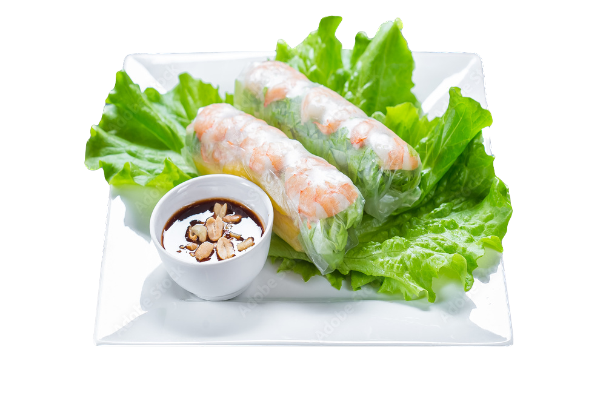
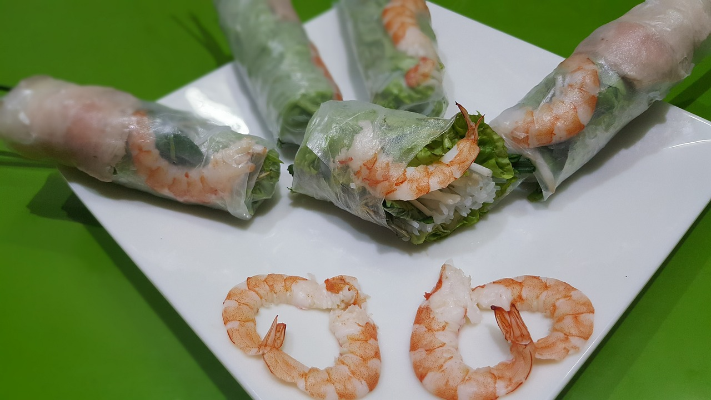

The history of Vietnamese spring rolls is not something agreed on by all. The specific ones showcased here are Vietnamese spring rolls, characterized by their rice paper wrap. While the initial idea of spring rolls originated in China, the Vietnamese version was created in Vietnam. Some believe that the origin of these spring rolls is China, in the sense that Chinese immigrants had brought over their version of spring rolls which inspired the Vietnamese spring rolls, while others believe it is Vietnam, for they say that the two spring rolls are entirely different and that the rice paper used in Vietnamese spring rolls were made by Vietnamese people.
In China, spring rolls were created as a way to celebrate the first day of spring, giving it the name Spring rolls. Around 300AD, spring rolls were like pancakes. As the culinary world advanced, chefs began rolling the pancakes into what we know as spring rolls today.
|
Chen, Marcus. "3 Interesting Facts You Might Not Know About Spring Rolls." Rice Bowl Deluxe, https://ricebowldeluxe.com/three-interesting-facts-regarding-spring-rolls/#:~:text=It%20is%20believed%20to%20have%20originated%20in%20China&text=People%20would%20make%20this%20dish,they%20are%20today%3A%20spring%20rolls.
"History of Spring Rolls — Julee Ho Media." Julee Ho Media, 22 June 2020, jhttps://juleeho.com/food-history-101-blog/history-of-spring-rolls.
Sharad, Aprajita. "Delving Into The Debated History Of The Vietnamese Spring Roll." Slurrp, 23 June 2022, https://www.slurrp.com/article/delving-into-the-debated-history-of-the-vietnamese-spring-roll-1655926096011.
Williams, Vicki. "Are Vietnamese Spring Rolls Really from Vietnam?" South China Morning Post, 24 Nov. 2019, https://www.scmp.com/magazines/style/leisure/article/3038552/where-did-vietnamese-spring-rolls-culinary-favourite.
James Trans
Pixabay. https://pixabay.com/photos/food-street-food-viet-nam-food-1825305/
Kurganskiy. Vietnamese cuisine, white plate, spring rolls on lettuce leaf, on white isolated background, top.
Adobe Stock. https://stock.adobe.com/458069278?clickref=1101lxQ5KcTY&mv=affiliate&mv2=pz&as_camptype=&as_channel=affiliate&as_source=partnerize&as_campaign=vkra